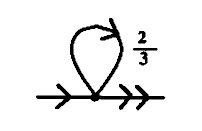
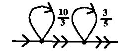

A programming language designed to test the boundaries of computer programming language design, as a proof of concept or as software art.
Subleq is a One Instruction Set Computer(OISC) architecture.
The subleq instruction subtracts the contents at address a from the contents at address b, stores the result at address b, and then, if the result is not positive, jumps to address c. If the result is positive, execution proceeds to the next instruction in sequence.
if (mem[B] -= mem[A]) <= 0 goto C
Each subleq instruction has 3 operands which are memory addresses:
A B C
For example, in the following example, the first instruction subtracts 7 (address 3) from 7 (address 4). The result in address 4 is 0, so goto 6. On address 6 is the instruction 3 4 0 which again subtracts 7 from now 0 and jumps back to 0.
3 4 6 7 7 7 3 4 0
Instructions
| JMP c | Z Z c |
|---|---|
| ADD a, b |
a, Z Z, b Z, Z |
| MOV a, b | b, b a, Z Z, b Z, Z |
| BEQ b, c | b, Z, L1 Z, Z, OUT L1: Z, Z Z, b, c OUT: ... |
Fractran is based on one of the most bizarrely elegant concepts of computation.
A Fractran program is an ordered list of positive fractions together with an initial positive integer input. The program is run by updating the accumulator.
Any number that can't be divided by any other number, apart from itself and one, is prime. Since primes can't be divided, we can think of them as the DNA of other numbers. In Fractran, each prime is a register and their exponent is their value.
The Accumulator
The state of the accumulator is held as a single number, whose prime factorization holds these registers(2, 3, 5, 7, 11, 13, 17, ..). If the state of the accumulator is 1008(2⁴ × 3² × 7), r2 has the value 4, r3 has the value 2, r7 has the value 1, and all other registers are unassigned.
| Accumulator | Registers | |||
|---|---|---|---|---|
| r2 | r3 | r5 | r7 | |
| 6 | 1 | 1 | ||
| 18 | 1 | 2 | ||
| 1008 | 4 | 2 | 1 | |
| 5402250 | 1 | 2 | 3 | 4 |
The Operators
A fractran operation is a positive fraction, each fraction represents an instruction that tests one or more registers, represented by the prime factors of its denominator. The Fractran computer goes through each fraction in order, in terms of our current accumulator value.
18(21 × 32) 2/3 = 8(23) addition r2+r3->r2
To run the adder operation(2/3), we will take the state of the accumulator. If multiplying it by this fraction will give us an integer, we will do so and start again at the beginning of the program. Otherwise, we will stop and consider the program complete. We will do this repeatedly until we can no longer produce an integer with this method.
| steps | state | registers | |||
|---|---|---|---|---|---|
| r2 | r3 | ||||
| 1 | 18 | 1 | 2 | 18 × 2/3 = 12/1 | INT, RESTART |
| 2 | 12 | 2 | 1 | 12 × 2/3 = 8/1 | INT, RESTART |
| 3 | 8 | 3 | 8 × 2/3 = 16/3 | NOT INT, END | |
To add the values 1 and 2, we will store the values in registers 2 and 3, our starting state is therefore 18(21 × 32).
For each step of the program, we will multiply our state with the program(18 × 2/3 = 12, 12 × 2/3 = 8, ..) until our our working value cannot be reduced to a whole number(16/3), we have exhausted the program. Alternatively, the program 3/2 will do the same operation but store the result in the register 3.
576(26 × 32) 1/6 = 16(24) subtraction r2-r3->r2
Operations become more readable when broken down into their primes. We can think of every prime number as having a register which can take on non-negative integer values. Each fraction is an instruction that operates on some of the registers.
| 2/3 | 15/256 | 21/20 |
|---|---|---|
| (21)/(31) | (31 × 51)/(26) | (31 × 71)/(22 × 51) |
if(r3 >= 1){ r3 -= 1; r2 += 1; return; } |
if(r2 >= 6){ r2 -= 6; r3 += 1; r5 += 1; return; } |
if(r2 >= 2 && r5 >= 1){ r2 -= 2; r5 -= 1; r3 += 1; r7 += 1; return; } |
You can interpret a fraction as saying if the current value of each register is greater than or equal to the value specified by the denominator, you subtract from the registers all of the values in the denominator, add all the values specified in the numerator, and then jump back to the first instruction. Otherwise, if any register is less than the value specified in the denominator, continue to the next fraction.
The Programs
A Fractran program is a list of fractions together with an initial positive integer input n. The program is run by updating the integer n as follows:
- For each fraction in the list for which the multiplication of the accumulator and the fraction is an integer, replace the accumulator by the result of that multiplication.
- Repeat this rule until no fraction in the list produces an integer when multiplied by the accumulator, then halt.
Let's put together an adder program similar from the one above(2/3) but which writes to a third register. The following program first moves the content in r2 to r3, and then the content of r3 to r5.
18(21 × 32) 3/2 5/3 = 125(53) addition r2+r3->r5(9 steps)
Alternatively, a faster way to do this would be to directly move powers of 2 over to 5, then powers of 3.
18(21 × 32) 5/2 5/3 = 125(53) addition r2+r3->r5(7 steps)
Each of the 7 steps of this last program looks like:
18 5/2 5/3 [18] r2=01 r3=02 ------------------ ----------------- 18 × 5/2 = 45/1 [45] r3=02 r5=01 45 × 5/2 = 225/2 45 × 5/3 = 75/1 [75] r3=01 r5=02 75 × 5/2 = 375/2 75 × 5/3 = 125/1 [125] r5=03 125 × 5/2 = 625/2 125 × 5/3 = 625/3 [125] r5=03
Both of these programs are destructive, meaning that they drain the registers of their original values. We can make (2/3) less destructive with (10/3) by storing a copy of r3 in r5. And we can create a non-destructive adder but this requires coming in with the program with the flag r7 set:
126(21 × 32 × 71) 7/11 715/14 935/21 1/7 2/13 3/17 = 2250(21 × 32 × 53)
As an extra demonstration, let us consider the following programs representing all the logic gates:
| Program | 07 | 14 | 21 | 42 | |
|---|---|---|---|---|---|
| AND Gate | 5/42 1/21 1/14 1/7 | 1 | 1 | 1 | 5 |
| OR Gate | 5/42 5/21 5/14 1/7 | 1 | 5 | 5 | 5 |
| XOR Gate | 1/42 5/21 5/14 1/7 | 1 | 5 | 5 | 1 |
| NAND Gate | 1/42 5/21 5/14 5/7 | 5 | 5 | 5 | 1 |
| NOR Gate | 1/42 1/21 1/14 5/7 | 5 | 1 | 1 | 1 |
| XNOR Gate | 5/42 1/21 1/14 5/7 | 5 | 1 | 1 | 5 |
Extras
I've been scratching at trying to fit a fractran-inspired vm hosted in uxn's 16-bit space where these fractions operate differently to facilitate running with low values in registers.
*/* | Jump |
|---|---|
*/0 | Push Acc/Load from memory |
0/* | Pop Acc/Save in memory |
0/0 | Pop, or Break |
A wise person marvels at the commonplace.Confucius
- Fractran Interpreter(C89)
- Fractran Interpreter(Web)
- Intro to Fractran
- Article on Esolang
- Collatz function
- Register Machine
- Remembering John Conway
Brainfuck is one of the most famous esolangs, and has inspired the creation of a host of other languages.
Brainfuck operates on an array of memory cells, each initially set to zero. A pointer is initially pointing to the first memory cell. All characters that are no operations should be ignored, and considered to be comments.
> | Move the pointer to the right |
< | Move the pointer to the left |
+ | Increment the memory cell at the pointer |
- | Decrement the memory cell at the pointer |
. | Output the character signified by the cell at the pointer |
, | Input a character and store it in the cell at the pointer |
[ | Jump past the matching ] if the cell at the pointer is 0 |
] | Jump back to the matching [ if the cell at the pointer is nonzero |
Brainfuck was invented by Urban Müller in 1993, in an attempt to make a language for which he could write the smallest possible compiler for the Amiga OS, version 2.0. He managed to write a 240-byte compiler.
Memory should normally consist of 8 bit cells, and wrap on overflow and underflow. Negative memory addresses should NOT be assumed to exist, however, an interpreter may provide some. Memory should consist of at least 30000 cells, some existing brainfuck programs do need more so this should be configurable or unbounded.
An interpreter can be implemented in about 180 bytes of Uxntal.
Orca is a livecoding language and virtual machine.
Orca is a two-dimensional esoteric programming language in which every letter of the alphabet is an operator, where lowercase letters operate on bang, uppercase letters operate each frame.
If you wish to learn how to use Orca, watch a tutorial or ask your questions in the forum.
Orca is a wildly unique visual programming tool. It's also an inky black and seafoam green alphabet soup, pulsating to some species of broody electronic industrial throb.Ivan Reese, The Future Of Coding
- Read Manual
- Download Orca
- Graphical version, Uxntal.
- Terminal version, ANSI C.
- Browser version, Javascript
- Norns version, Lua